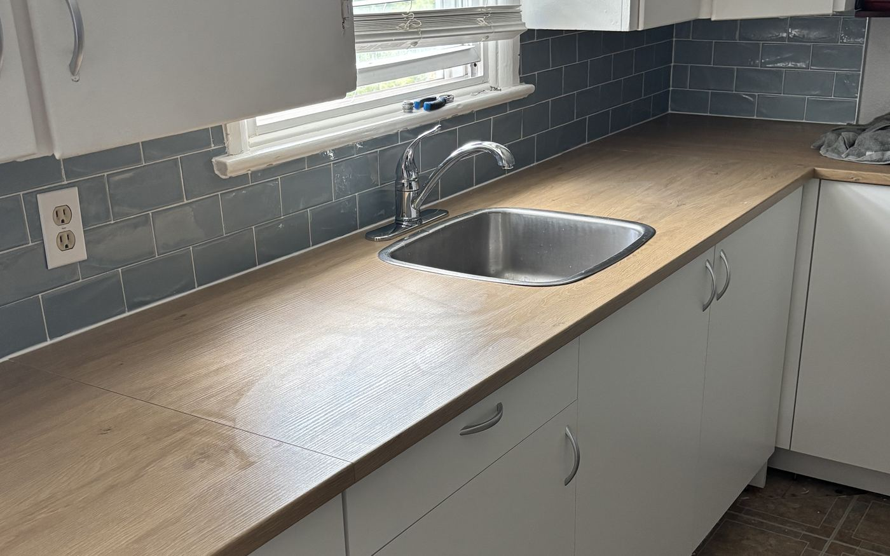

Kitchen renovations
Kitchen Renovations in Cornwall, Ontario
Layout changes, custom cabinetry, islands and finish carpentry — planned properly and run by one crew from demolition to the last piece of trim.
A kitchen renovation is mostly a scheduling problem wearing a carpentry costume. Cabinets have lead times. Counters cannot be templated until the boxes are set. Electrical and plumbing have to be roughed in and inspected before drywall. Get the order wrong and a six-week job becomes a four-month one with a household washing dishes in the bathtub.
We plan the sequence before we swing a hammer, order the long-lead items first, and run the whole job with one crew and one point of contact. If a wall is coming out we establish early whether it is load-bearing, because removing one that is means a beam, a permit, and usually an engineer's drawing — and that is a conversation to have at the planning stage, not the demolition stage.

Scope of work
What a kitchen renovation covers
Layout planning
Working through what the room can actually support — where services already run, what a wall removal would cost, and whether an island fits with the clearances you need to open a dishwasher.
Structural changes
Opening a wall between the kitchen and living space, with the beam sized and the permit obtained. We establish load-bearing status early rather than finding out on demolition day.
Cabinetry
Stock, semi-custom or fully custom built to the room. Custom earns its cost in older houses where the walls are not square and the ceilings are not level — which is most of the houses we work in.
Counters and backsplash
Templated after the boxes are set so the fit is right, then tile or slab backsplash finished into the cabinetry and around outlets cleanly.
Electrical and plumbing
Coordinated with licensed trades — circuits for modern appliance loads, counter receptacles to Code, under-cabinet lighting, and sink and dishwasher relocations.
Flooring and finish carpentry
Flooring, trim, crown, panelling and toe kicks. The finish carpentry is what makes a kitchen look built-in rather than installed, and it is the part we care most about.
Options
Cabinetry, and where the money goes
Cabinets are usually the largest line on a kitchen quote, so it is worth understanding the tiers.
Stock cabinetry
Pre-made in fixed sizes. The fastest and least expensive route, and perfectly good when the layout is straightforward. The compromise is filler panels wherever your wall dimensions do not match the increments available.
- Shortest lead time
- Lowest cost
- Fixed sizes mean filler panels
Semi-custom
Stock construction with real choice in sizes, finishes and internal fittings. For most kitchens this is the sensible middle, and it is where we point people who want a specific look without a fully bespoke budget.
- Wide finish and size range
- Better internal hardware
- Moderate lead time
Full custom
Built to your room's actual dimensions. Worth it when the house is old and nothing is square, when ceiling height should be used properly, or when you want something no catalogue offers — an integrated appliance run, an unusual island, a built-in banquette.
- Built to the room
- Uses every inch of height
- Longest lead time
Before you plan on removing that wall
Opening up a kitchen into a living or dining room is the most requested change we get, and it is very often the right one. But whether the wall is load-bearing changes the job substantially: a structural wall needs a properly sized beam, posts carrying down to adequate support, a building permit, and in most cases an engineer’s drawing.
None of that is a reason not to do it. It is a reason to know before you budget, rather than three days into demolition. We assess it during quoting — and we would rather tell you it is a bigger job than you hoped than discover it with your kitchen already in a skip.
Service areas
Kitchens across Cornwall & SD&G
Based in Cornwall and working across Stormont, Dundas and Glengarry. If your town is not listed, call us anyway — we travel.
FAQ
Kitchens: common questions
How long does a kitchen renovation take?
Six to twelve weeks on site is typical for a full kitchen, but the critical path usually starts well before that: cabinetry lead times commonly run several weeks from the date the order is finalised, and counters cannot be templated until the cabinets are physically installed. We order long-lead items first and give you a written schedule, so the time without a kitchen is as short and as predictable as we can make it.
Do I need a permit for a kitchen renovation?
Replacing cabinets, counters and finishes in the existing layout generally does not. Removing or altering a load-bearing wall does, and so does moving plumbing or adding new circuits in most cases. If a permit is required we prepare and file the application, and we arrange the engineer's drawing when a beam calculation is needed.
Can I stay in the house during the work?
Almost always, yes — the kitchen is out of use, not the house. What helps most is setting up a temporary kitchen somewhere else before demolition: fridge, microwave, kettle and a sink you can reach. We will tell you which weeks will be the loudest and dustiest so you can plan around them.
Should I get custom or stock cabinets?
It depends on the house more than the budget. In a newer home with square walls and standard ceilings, stock or semi-custom cabinetry fits well and the money is better spent on counters and appliances. In an older Cornwall home where nothing is plumb and the ceilings are an unusual height, custom stops looking like a luxury and starts looking like the only way to avoid a row of filler strips.
Do you handle the plumbing and electrical too?
We coordinate them. The plumbing and electrical work is carried out by licensed trades, scheduled and managed by us as part of the job, and inspected before anything is closed in. You get one point of contact and one schedule rather than having to chase three contractors yourself.
Free quote
Get a free quote for your kitchens project
Tell us what you are planning. We reply to every inquiry, usually within one business day.
Services
Other things we do
Deck building
Custom pressure-treated, cedar and composite decks engineered for Eastern Ontario frost.
Read more 02Fence installation
Privacy, picket, PVC, aluminum and chain link — set deep, set straight, set square.
Read more 03Siding installation
Vinyl, engineered wood and board-and-batten, with soffit, fascia and eavestrough.
Read more 04Window replacement
ENERGY STAR windows and doors installed to spec, air-sealed and properly flashed.
Read more 05Bathroom renovations
Full gut-and-rebuild bathrooms, tub-to-shower conversions and accessible walk-ins.
Read morePrefer to talk it through first?
Call us and describe what you are dealing with. We will tell you honestly whether it is a job worth doing now.